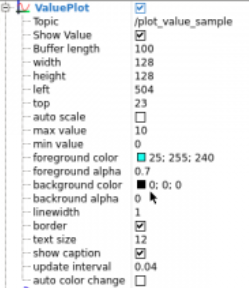
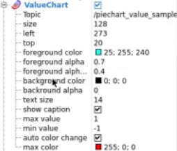
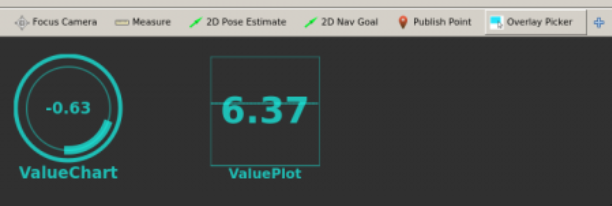
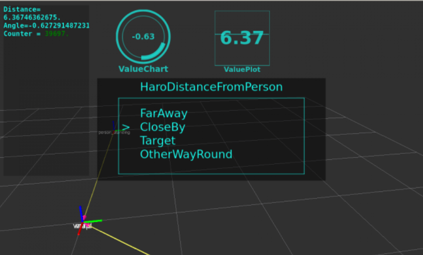

Sometimes, it's necessary to have some kind of user friendly display of the important data in RVIZ. Like, for example, the speed of the robot base, or CPU load, or maybe the learning index. Maybe you need to know the effort made by a robot hand and detect when it exceeded a certain limit.<br>You also may need to indicate in which state the robot is in now: Is it learning? Processing? Lost?<br>All this and much more can be obtained with overlays.Sometimes, it's necessary to have some kind of user friendly display of the important data in RVIZ. Like, for example, the speed of the robot base, or CPU load, or maybe the learning index. Maybe you need to know the effort made by a robot hand and detect when it exceeded a certain limit.
You also may need to indicate in which state the robot is in now: Is it learning? Processing? Lost?
All this and much more can be obtained with overlays.
Here you are going to learn how the demo overlays were made through an example:Here you are going to learn how the demo overlays were made through an example:
So, essentially, you have two types of overlays here:<br><ul><li>Generated reading only topics: The <b>Plot</b> and the <b>PieChart</b> are like this. You just have to add the element to RVIZ and tell it what topic is publishing the float32 data you want it to read. You don't need to do anything else.</li><li>Generated with Objects and publishing those markers: This is the case of the <b>OverlayText</b> and <b>OverlayMenu</b></li></ul>So, essentially, you have two types of overlays here:
Just add both elements to an RVIZ session:Just add both elements to an RVIZ session:
<img src="img/rviz_marker_unit3_plot.png"/><img src="img/rviz_marker_unit3_piechart.png"/> 
You can then add a new Panel with the plus sign and select the <b>Overlay Picker</b>. This will allow you to move the Plots and PieCharts around where you want, and when you save the RVIZ session, they will stay where you left them.You can then add a new Panel with the plus sign and select the Overlay Picker. This will allow you to move the Plots and PieCharts around where you want, and when you save the RVIZ session, they will stay where you left them.
<img src="img/rviz_marker_unit3_overlaypicker.png"/>
And to add menus and text functionality, we will have to create objects as usual. Here you have the basics:And to add menus and text functionality, we will have to create objects as usual. Here you have the basics:
text_pub = rospy.Publisher("/text_sample", OverlayText, queue_size=1)Create the publisher, of the type OverlayText.Create the publisher, of the type OverlayText.
text = OverlayText()text.width = 200text.height = 400text.left = 10text.top = 10text.text_size = 12text.line_width = 2text.font = "DejaVu Sans Mono"text.text = """Distance= %s.Angle=%s.Counter = <span style="color: green;">%d.</span>""" % (str(number), str(number2) ,self.counter)text.fg_color = ColorRGBA(25 / 255.0, 1.0, 240.0 / 255.0, 1.0)text.bg_color = ColorRGBA(0.0, 0.0, 0.0, 0.2)text_pub.publish(text)Let's talk about some of the variables of the class <b>OverlayText</b>:<br><ul><li>width, height, left, top: This states the dimensions of the Text area (width, height) and the position of the upper-left hand corner of the text (left, top).</li><li>text_size, line_width, font: Font parameters.</li><li>text: Here you can state the string you want, and bear in mind that you can update it all the time, giving dynamic text data.</li><li>fg_color,bg_color: Colors of the background.</li></ul>Let's talk about some of the variables of the class OverlayText:
Here you have the complete message:Here you have the complete message:
"""[jsk_rviz_plugins/OverlayText]: uint8 ADD=0 uint8 DELETE=1 uint8 action int32 width int32 height int32 left int32 top std_msgs/ColorRGBA bg_color float32 r float32 g float32 b float32 a int32 line_width float32 text_size string font std_msgs/ColorRGBA fg_color float32 r float32 g float32 b float32 a string text """To visualise, add the element <b>OverlayText</b>.To visualise, add the element OverlayText.
The menu is essentially a list with an index that indicates which element on the list is to be selected.<br>It's done like so:The menu is essentially a list with an index that indicates which element on the list is to be selected.
It's done like so:
menu_publisher = rospy.Publisher("/test_menu", OverlayMenu, queue_size=1)menu = OverlayMenu()menu.title = "HaroSystemMode"menu.menus = ["Sleep", "Searching", "MovingInCircles","Waiting"]# Index 1 is Searchingmenu.current_index = 1menu_publisher.publish(menu)You have a publisher like always, and you can change three things:<br><ul><li>title</li><li>menus: It's a list with all the options.</li><li>current_index: Option selected.</li></ul>You have a publisher like always, and you can change three things:
You then have to add that element in RVIZ through the <b>OverlayMenu</b> element.You then have to add that element in RVIZ through the OverlayMenu element.
Here you have the program that generated all the overlays for the demo as an example. It essentially retrieves the linear distance and angles from HaroRobot to StandingPerson from the topic <b>/haro_base_link_to_person_standing_tf_translation</b>. Bear in mind that although it states translation, the data given is a twist. That is because it's simplified to give you the linear distance in the linear.x value directly, and the angle orientation through the angular.z variable:Here you have the program that generated all the overlays for the demo as an example. It essentially retrieves the linear distance and angles from HaroRobot to StandingPerson from the topic /haro_base_link_to_person_standing_tf_translation. Bear in mind that although it states translation, the data given is a twist. That is because it's simplified to give you the linear distance in the linear.x value directly, and the angle orientation through the angular.z variable:
<p style="background:green;color:white;">haro_overlay_complete_demo.py</p>haro_overlay_complete_demo.py
#!/usr/bin/env pythonfrom jsk_rviz_plugins.msg import OverlayText, OverlayMenufrom std_msgs.msg import ColorRGBA, Float32import rospyimport mathimport randomfrom geometry_msgs.msg import Twistclass HaroOverlay(object): def __init__(self): self.text_pub = rospy.Publisher("/text_sample", OverlayText, queue_size=1) self.plot_value_pub = rospy.Publisher("/plot_value_sample", Float32, queue_size=1) self.piechart_value_pub = rospy.Publisher("/piechart_value_sample", Float32, queue_size=1) self.menu_publisher = rospy.Publisher("/test_menu", OverlayMenu, queue_size=1) self.plot_value = 0 self.piechart_value = 0 self.max_distance_from_object = 10.0 self.subs = rospy.Subscriber("/haro_base_link_to_person_standing_tf_translation", Twist, self.twist_callback) self.counter = 0 self.rate = rospy.Rate(100) self.overlaytext = self.update_overlaytext() self.menu = self.update_overlay_menu() def twist_callback(self, msg): self.plot_value = msg.linear.x self.piechart_value = msg.angular.z def update_overlaytext(self, number=1.23, number2=20): text = OverlayText() text.width = 200 text.height = 400 text.left = 10 text.top = 10 text.text_size = 12 text.line_width = 2 text.font = "DejaVu Sans Mono" text.text = """Distance= %s. Angle=%s. Counter = <span style="color: green;">%d.</span> """ % (str(number), str(number2) ,self.counter) text.fg_color = ColorRGBA(25 / 255.0, 1.0, 240.0 / 255.0, 1.0) text.bg_color = ColorRGBA(0.0, 0.0, 0.0, 0.2) return text def update_overlay_textonly(self, new_text): self.overlaytext.text = new_text def update_overlay_menu(self): menu = OverlayMenu() menu.title = "HaroSystemMode" menu.menus = ["Sleep", "Searching", "MovingInCircles","Waiting"] menu.current_index = self.counter % len(menu.menus) return menu def update_overlay_menu_haro_tf(self): menu = OverlayMenu() menu.title = "HaroDistanceFromPerson" menu.menus = ["FarAway", "CloseBy", "Target", "OtherWayRound"] fraction = 10.0 if self.piechart_value < (math.pi/fraction): if self.plot_value >= self.max_distance_from_object: index = 0 elif self.plot_value >= (self.max_distance_from_object/ fraction) and self.plot_value < self.max_distance_from_object: index = 1 elif self.plot_value < (self.max_distance_from_object/fraction): index = 2 else: index = 3 menu.current_index = index return menu def start_dummy_demo(self): while not rospy.is_shutdown(): self.overlaytext = self.update_overlaytext() self.menu = self.update_overlay_menu() if self.counter % 100 == 0: self.menu.action = OverlayMenu.ACTION_CLOSE self.text_pub.publish(self.overlaytext) # If values are very high it autoadjusts so be careful self.value_pub.publish(math.cos(self.counter * math.pi * 2 / 1000)) self.menu_publisher.publish(self.menu) self.rate.sleep() self.counter += 1 def start_harodistance_demo(self): while not rospy.is_shutdown(): self.overlaytext = self.update_overlaytext(number=self.plot_value, number2=self.piechart_value) self.menu = self.update_overlay_menu_haro_tf() self.text_pub.publish(self.overlaytext) self.plot_value_pub.publish(self.plot_value) self.piechart_value_pub.publish(self.piechart_value) self.menu_publisher.publish(self.menu) self.rate.sleep() self.counter += 1 def dummy_overlay_demo(): rospy.init_node('distance_overlay_demo_node', anonymous=True) haro_overlay_object = HaroOverlay() try: #haro_overlay_object.start_dummy_demo() haro_overlay_object.start_harodistance_demo() except rospy.ROSInterruptException: passif __name__ == '__main__': dummy_overlay_demo()<p style="background:green;color:white;">END haro_overlay_complete_demo.py</p>END haro_overlay_complete_demo.py
<p style="background:#EE9023;color:white;">Exercise U3-1</p>Exercise U3-1
Add the haro_overlay_complete_demo.py to your package and execute it. See what it gives and play around with the options of the different elements.<br>Then, do as an EXTRA:<ul><li>Plot the x,y, and z positions of HaroRobot. Adjust the maximum and minimum values so that the graph shows significant data. Remove the AutoScale for this.</li><li>Change the limits in the PieChart so that it changes color based on the values. Select the autocolor change to have that effect.</li><li>Create a menu that changes based on a value in a topic. That way, anyone can change that state.</li></ul>Add the haro_overlay_complete_demo.py to your package and execute it. See what it gives and play around with the options of the different elements.
Then, do as an EXTRA:
<p style="background:#EE9023;color:white;">END Exercise U3-1</p>END Exercise U3-1
You should see the basic script like this:You should see the basic script like this:
<img src="img/rvizmarkers_unit3_demo.png"/>
## Congratulations, you now know how to put Overlays in RVIZNext, we will see how to use panels to turn RVIZ into your robot's GUI command system and give it some interactivityNext, we will see how to use panels to turn RVIZ into your robot's GUI command system and give it some interactivity